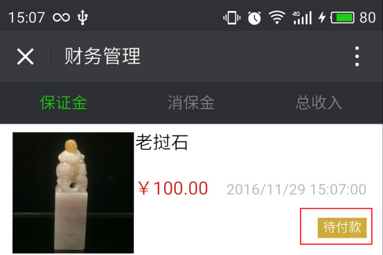

保证金
保证金是由卖家设置，参拍者出价前必须缴纳；拍卖结束后未得拍者，保证金将退还，得拍者需要在付款以后才会退还。如买家未设置保证金，则无需缴纳。
保证金缴纳步骤:卖家设置保证金金额为 100 元，买家点击“出价”按钮，系统提示需缴纳100 元保证金。点击“确定”按钮进入缴纳页面
确定后将进入保证金订单界面

保证金订单界面，选择“立即付款”进入付款界面
输入密码后，缴纳保证金就完成了，即可返回参加竞拍。
如果中途放弃了付款，则在“我的”—“财务管理”—“保证金”里面就会存在未付款的订单，可以继续完成付款 ，下图为未付款的示例

当保证金付款已经完成了，在“我的”—“财务管理”—“保证金”里面订单的状态就是已冻结,如下图

保证金付款完成后方可参加相应的竞拍。
竞拍结束后，参拍者如没能得拍，系统将退还保证金，保证金订单状态也会变成“已解冻”，如下图
*保证金退还后，具体到账时间各银行有所差异。
消保金
为保障买卖双方的利益，艺易堂推出了消保金服务，消保金缴纳金额为每笔1000 元。消保金为非必须缴纳(商家必须缴纳)。卖家在缴纳相应金额的消保金后，在店铺名称后面会增加一个“保”图标。如果违约，系统会根据相关规则扣除卖家的消保金赔付给买家，保障买家的利益。当卖家被扣除了相应消保金，账户消保金金额不足1000 ，需要补交，否则图标将消失。
缴纳步骤如下：
点开“我的”—“财务管理”—选择“消保金”点击缴纳按钮，选择立即付款。如下图所示：
付款完成后刷新主页，会出现一个“保”字，如下图所示

系统自动扣除违约的消保金（图片金额仅供参考），当金额不足1000 ，需要补交。
*商家必须缴纳消保金，其他用户可选